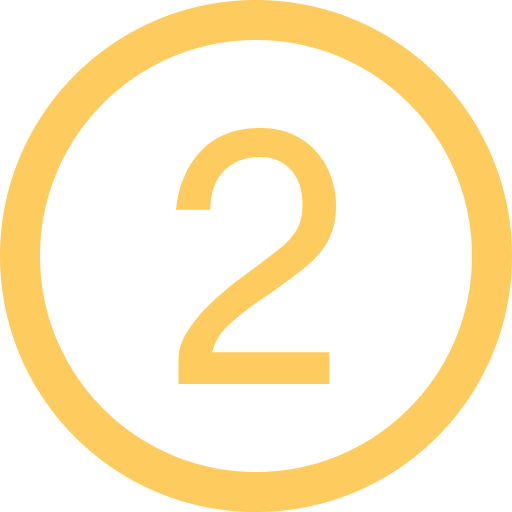
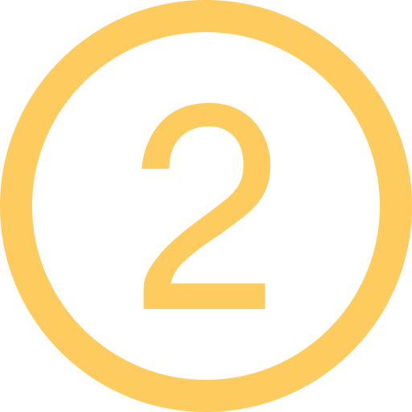
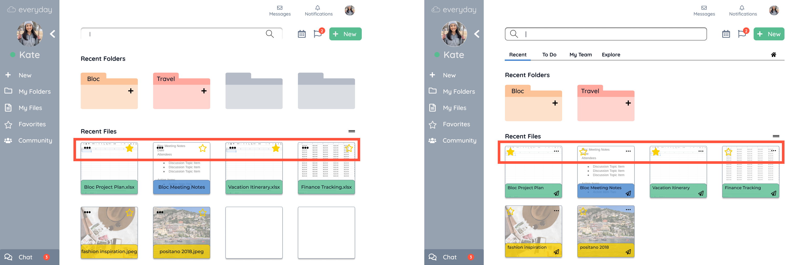
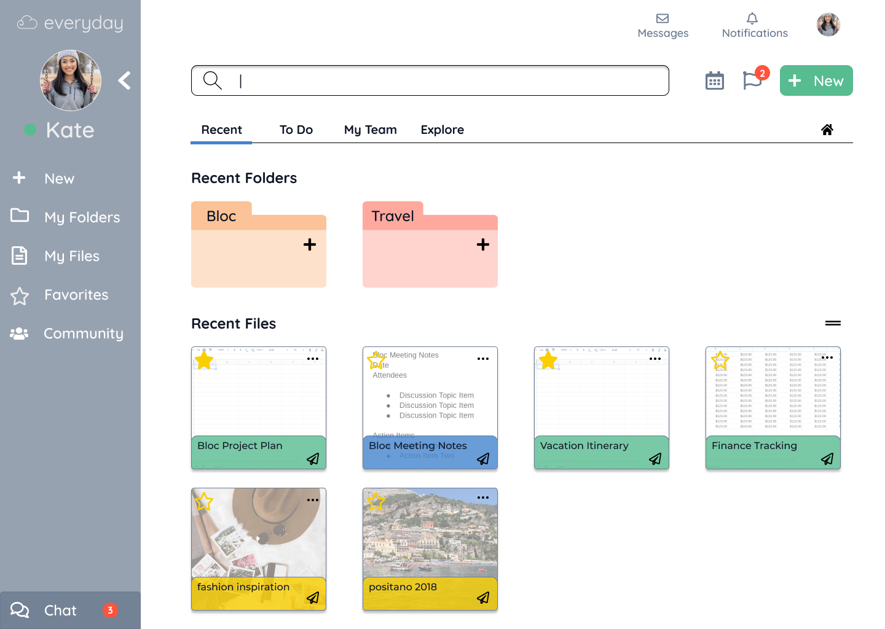

Buddy
Buddy is a mobile pet adoption application that connects users with adoptable pets in need of a home.

MY ROLE
- UX Designer
- UI Designer
- X
TIMELINE
- 3 weeks

DELIVERABLES
- Competitive Analysis
- User Survey
- User Personas
- User Stories and Flows
- Content Strategy
- Wireframes
- Usability Testing
- Style Guide
- Preference Testing
- Clickable Protoype
- Visual Design

TOOLS & SOFTWARES
- Figma
- Balsamiq
- Google Forms
- GitHub
- Atom
- Adobe XD
- Adobe Photoshop
- InVision
- Maze
- UsabilityHub
DISCOVERY & RESEARCH
Competitive Analysis
Turning weaknesses into strengths
When adopting pets, potential adopters seek local shelters or search online through the various pet adoption websites. To understand this market and its competitors, I researched 4 of the top and well rated pet adoption websites and mobile applications that are vastly different but have unique characteristics that make it successful: PetFinder, Adopt a Pet, We Rescue, and Furry Friend Finder Pet Rescue.
All 4 of these pet adoption services offer unique qualities that prove as strengths if bringing in a new competitor into the market. This includes the basic filters available to narrow down the search preference and informational details about the shetlers for available pets. After reviewing several websites for both local and large corporations aside from these selected 4, one word came to mind: outdated. Many of these websites appeared to have an old look and feel in addition to having an overwhelming amount of adoptable pets to sift through. Taking into account the strengths and weaknesses of the competitors, a successful pet adoption service will be a combination of the following abilities:
- Provide last update visibility for users
- Advanced filter options (personality, temperament, compatibility)
- Location range (distance)
- Update saved pets information if there are changes to the pet (e.g. remove adopted pets)
- Provide pets personality / health info along with basic details
- Ability to select multiple options for 1 filter (e.g. size, age)
- Picture availability (good quality, not panning or large frame option)
- Provide tips and techniques on newly adopted pet

User Surveys
Who are the pet adoption users
To learn about the potential audience, I created a survey with Google Forms and conducted it on students and working professionals to research the important features and user experience of a pet adoption service.

86%
believe advanced filter capabilities are a key feaure

73%
of the respondents want the ability to match pets based on profile
User Personas
Bringing the Users to Life
To learn about the potential audience, I created a survey with Google Forms and conducted it on students and working professionals to research the important features and user experience of a pet adoption service.
INFORMATION ARCHITECTURE
User Stories & User Flows
Defining user goals and mapping out the MVPs
Based on the user research, I began prioritizing the tasks by user importance and constructing the sitemap as a foundation for everyday’s web and mobile application.
Minimum Viable Product (MVP)
“As a returning user, I want to ...
- Sign up for an account
- Share files with an individual or group of users
- Upload files
- Create new content
- Bookmark files
- Organize files
- Create actionable items
“As a returning user, I want to share files with an individual or group of users to collaborate”

WIREFRAMES & TESTING
Low Fidelity Wireframes
The Foundation
After completing the information architecture, I began creating low fidelity wireframes and transferring it into Balsamiq. I started wireframing the landing page and main homepage. This is where interested audience and new users will learn about benefits and capabilities of Everyday. It is important to capture and create a great first impression for users to sign up for the application.

Usability Testing
Testing the Foundation
Before creating high fidelity mockups, I conducted usability testing on the low fidelity wireframe clickable prototype to test how my participants interact with the Everyday application using Maze. During this process, I noticed that I had overlooked few small steps in the processes. I created the prototypes based on my assumptions on how I believed the participants will go from one step to the next but what may appear intuitive to me at the time of buidling, may be confusing to the participant. From the feedback and results, I made iterations to the process steps and layout. I tested and re-validated this amongst the participants before beginning the high fidelity mockups.
VISUAL DESIGN
Logo
Building a Brand
Everyday is a web and mobile cloud solution for organizing, creating, and collaborating on a daily basis, hence the name "everday". I began with a mind mapping exercise to connect the attributes, look, and feeling of the brand. The Everyday logo is a combination of two different elements. The letter "e" in cursive is part of the cloud to represent the brand name and the cloud storage application. The logo went through several iterations before the final design was selected for its smooth, connectivity of the lines and its ease to convey that its a cloud related brand. I also wanted the brand name font to be clean and simple.

Typography
Building a Brand
I chose Quicksand and Montserrat typefaces for the Everyday brand. Quicksand is the primary header typeface and Montserrat works as a complementary typeface. These fonts are both geometric shapes which I think gives a clean and modern look with easy legibility which defines the overall feeling of the brand.
Color Palette
An engaging and vibrant mood
As an everyday, collaborative cloud storage application for all users, I wanted to select colors that convey a vibrant, inclusive, energetic, and engaging emotion. This is shown with the colors selected, they are variations of primary colors with a brighter, dynamic tone.


High Fidelity Mockup
Adding the Details
With the Style Guide for branding Everyday completed, I began adding the details to the low fidelity wireframes with the incorporation of the user feedback.

Preference Testing
testing user preferences
ADDING QUICK LINKS: In the previous usability testings, I recevied feedback on including more call to action buttons to quickly complete tasks. In the preference testing, 74% of the users preferred the additional action links and buttons due to the less amount of time spending navigating through the site. Because it is a collaboration app, I added the share icon on the files for quick action.
 

ICON ALIGNMENT: Few users found it a bit confusing on the placement of couple of the icons. I moved the action buttons for files on the right side than the left which was preferred by the participants.

REMOVING EMPTY FOLDERS AND FILES: When testing the overall homepage look, it was visually preferred to remove the empty folders and files. This was initially placed as a placeholder for additional new folders and files. This change was preferred by 68% of the participants.
Final Prototype
bringing everything together
After completing the usability and preference testing, I incorporated feedback from the participants to update and finalize the hifi mockup.
LESSONS LEARNED

Test Early and Often
From this project, I have learned to test often throughout the process but also to test early on with the options from the start. By testing early through each process, whether it's the low fidelity wireframe to branding and visual design, it provided early feedback and encourages more brainstorming of ideas. I learned from each participant feedback and enjoyed seeing user interaction with the prototypes from their perspective.

Test all your options
In the duration of this project, I learned the process of conducting preference testing or A/B testing. Though I began conducting these tests later on in the process for high fidelity prototypes. The preference testing would be beneficial from the initial stages when building the brand and the style. Instead of continually enhancing the branding / visual design before completing and sending it to participants, I am able to understand from their perspective than building from my own assumptions.

Spend more time wireframing
Wireframing is a very important step in the design process. There were many iterations done between the low fidelity to high fidelity mockup. Spending more time on the low fidelity wireframing and continually testing from this stage in the process, I believe saves more time with less iterations when coming around to designing the high fidelity prototypes.

Additional Changes
If I had more time, I would create further prototypes for functionalities beyond the defined MVPs. During the user story process, I defined other user tasks that are important in the creating an application that stands apart from competitors. These functionalities include creating community pages to interact with people outside to learn and gather inspirations and syncing calendars for scheduling tasks and action items.